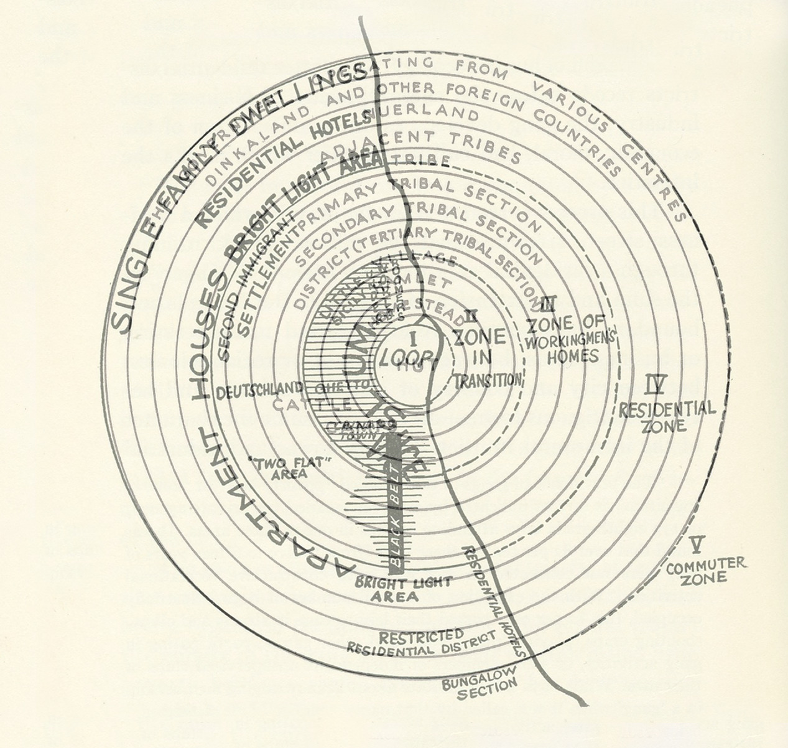

Created Tuesday 16 March 2021 (21-03-16_11-58-32)
@2021 @article
Phillips, Susan A. (2021). Gang Graffiti as Totemism. American Anthropologist. https://doi.org/10.1111/aman.13538
https://anthrosource.onlinelibrary.wiley.com/doi/full/10.1111/aman.13538?af=R
Skip to Article Information
AnthroSource
americananthro.org
American Anthropologist
Early View
RESEARCH ARTICLE
Free Access
Gang Graffiti as Totemism
Susan A. Phillips
First published: 24 February 2021
https://doi.org/10.1111/aman.13538
Sections
TOTEMISM
GANGS, TOTEMISM, AND URBAN STREETSCAPES
THREE DYADIC SYSTEMS
GANG SYNTAX
CONCLUSION
Acknowledgments
REFERENCES CITED
ABSTRACT
In Los Angeles and elsewhere in the United States, gangs demonstrate a profound interrelationship between street life, mass incarceration, gang cartographies, and the development of meaning, which together act as a form of totemism. Long used in anthropology, the concept of totemism remains powerful analytically because of its ability to describe how intentional oppositions are hinged to surrounding environments. Gang writing allows members to infuse themselves into neighborhoods by spatializing the tie of sympathy between signature, person, and landscape. Gang totemic practices originate from similarity in form as well as shared history, and from the contradiction of knowing a system is constructed while continuing to treat it as if it were primordial. Showing how social meaning is tied to the built environment contributes to decolonizing discourses by further eroding the binary between nature and culture. When combined with critical frameworks that look at power and inequality, the concept of totemism may be revitalized in a manner that respects local understandings, is distilled to its essential component parts, and gains relevance across wide swaths of ethnographic cases. The framework of totemism enables understanding of how urban environments become a locus of gang sentiment, moving away from simplistic ideas of gang territoriality. [gangs, totemism, prison, graffiti, critical structuralism]
My thinking about totemism in contemporary urban landscapes began with a gut‐level recognition I had as an art history major in the late 1980s. Art of the Northwest Coast, with its intrinsic ties to social life, seemed to me to be the same “kind” of art as Los Angeles gang graffiti. Studying LA gang and Northwest Coast representations led me to take a further semantic step: to consider that these were the same “kinds” of societies. They were governed by segmentary principles, shared flamboyant consumption practices, and were constrained by endemic, inward‐facing violence. I had little fear of inadvertently imposing social evolutionary perspectives because my urban example emphasized the manufactured, rather than primordial, nature of gang social‐group formation. But the comparison, largely based in structuralism, was a nonstarter as I entered graduate school in anthropology in the early 1990s. In the United States, totemism was dead intellectually, and dangerous politically, because the comparison of urban gangs to traditional cultures might seem to label these groups “savage” or “primitive.”
My long‐term study of gangs and gang graffiti, however, confirmed a strong resonance between gang material expression and totemism. Durkheim and Mauss's (1963) Primitive Classification and Claude Lévi‐Strauss's (1963) Totemism became my foundational texts. Describing “traditional” peoples, these anthropologists analyzed the meaningful pairing of opposites, the manner in which changes in groups might impact changes in symbols, the relationship between parts and wholes, and connections between symbols, people, and the world in which they lived. To envision similar patterns among gangs in Los Angeles, a conceptual leap was necessary. All humans live in anthropogenic environments that are altered, built, and interpreted. The world of gangs was fully urban (built), but their relationships to that environment could easily seem fully “natural” to them. I interpreted gang relationships to their neighborhoods through a critical lens, and I kept to myself the grounding that totemism offered me within anthropological theory. I simply could not reconcile the neocolonial implications of such an approach.
Gangs are vilified subcultures whose shape and violence result from economic inequality, residential segregation, and other forms of state violence, including changing welfare policies, brutal policing, and mass incarceration (Brotherton 2015; Ralph 2014; Rios 2011; Vigil 1988; Zilberg 2011). In cities like Los Angeles, New York, or Chicago, gang histories began in the nineteenth century, although most contemporary gangs originated in the twentieth century. Gang violence is directed toward rival groups and is bound to other forms of structural, symbolic, and direct political violence (Bourgois 2001). Gang members embrace a profound spatial relativism in which blocks and streets, and the emblems representing them, become constitutive of gang internal identities. In the hands of gang members, the peculiarities of built environments become the basis for self‐ and group differentiation. Numerical and lettered designations are “tattooed on the heart” (Boyle 2011) in a manner that fuses external gang political geographies with internalized states of personhood.
The ways that gang members animate, dress up, and adorn gang‐related symbols make the streets act akin to a physical body, with graffiti as its tattoo. The symbolic work that gang members perform includes figurative representations of gang categories, writing graffiti in neighborhoods, engaging in linguistic and material plays to revere one's own symbols while denigrating enemy symbols, using hand signs, and tattooing gang icons onto bodies. Aesthetic elaboration is a core aspect of gang expressive culture (Figure 1).
image
FIGURE 1
Open in figure viewer
PowerPoint
CV 70, 70s, for Compton Varrio 70, or Setentas. CV 70, in white with a black outline, is written in “Old English” letters. Compton Varrio is the regional designation. (Photograph by author) [This figure appears in color in the online issue]
Through graffiti, gang members convert nonhuman, inanimate things (their nature) into quasi‐animate objects with human‐like components. What gangs gloss as “neighborhood” is both langue and parole—both the conception and its material manifestation. Gang divisions based on urban streetscapes are “granted the attributes of personhood” (Sahlins 2014, 282). These divisions become foundational categories for action, social life, enmity, and alliance through gang material production.
For gangs, totemism is the product of creating relational opposition through intimacy with streetscapes and the symbols derived from them. Gang members condense their neighborhoods into numbers, letters, or figures that act as a visual shorthand for street names, area codes, and city designations. These, in turn, are embedded within a vast geography of gang political identification that is dyadic—in other words, its core division splits into two, with further subdivisions following. The act of emblematizing urban streetscapes is both different from totemic practices in places like Native Australia, New Guinea, Indigenous North America, or Amazonia—totemism's traditional stomping grounds—and not so different at all. The process by which gang symbols are tied to landscapes is totemic in that it lends concrete form to group division, classification, and solidarity.
Despite its suitability for the gang topic, applying totemism, or any structuralist principle, to gangs remains problematic. Recently, however, anthropology's conception of totemism's position has begun to shift. Instead of emphasizing colonial or neocolonial frameworks, contemporary references to totemism are part of theorizations that work toward anthropology's “permanent decolonization” by eroding binary divisions between nature and culture (Descola 2013; Latour 2009, 2; Viveiros 1992, 2015). More broadly, efforts to decolonize anthropological thinking have questioned conventional ideas of expertise, developed conversations about the intellectual contributions of interlocuters as opposed to research subjects, and attempted to expand voices included in academic discourses (Allen and Jobson 2016; Harrison 1991).
One thing that has been particularly important in decolonizing studies has been the effort to destabilize binary categorizations that in the United States have systematically positioned Black and Brown persons as more body than mind—as on the side of the feminine, as raw, as associated with nature, as Black, or as savage rather than as masculine, cooked, cultured, white, or civilized. Attempts to dissolve divisions between nature and culture thus also undermine constructs that continue to place people of color in marginalized positions.
Decolonizing academic work has entered a facet of gang studies, which has moved from writings produced by outsiders to a more critical, contemporary scholarship, some of which is produced by insiders to street life, including former gang members (see the work of Alex Alonso, Stefano Bloch, Randol Contreras, Robert Durán, Victor Rios, and Robert Weide). I use the terms “gang” and “gang member” in a manner that reflects words people use to self‐identify. The gangs I describe draw attention to the notion of the primitive as a construct, to personified relations with the built environment, to contradictions within the experience of gang membership, and to violence‐based lifestyles that arise in direct response to oppression and state violence.
I developed my understanding of gang writing in graffiti and tattoo through twenty‐five years of qualitative fieldwork in Los Angeles, including extensive documentation of gang self‐representation (Phillips 1999). During my fieldwork, gang members described how “blocks” or “bricks” helped to build who they were both collectively and individually. They referenced the impact of cracks in the sidewalk, locations where blood had been spilled, and the letters, colors, or numbers tied to these geographical elements as foundations for gang worlds. They took style seriously, writing in multiple fonts and in angular or handwritten forms. They discussed the impact of incarceration, from juvenile facilities and county jails to California state penitentiaries, private lockups, or federal prisons—all of which shifted street‐based affiliations in different ways.
Because gang members are also members of the larger American society, examining notions of their totemic practice requires embracing imperfection, incompleteness, and contradiction. However, Los Angeles gang members consider that the streets have the power to shape identities. Streets and people become collaborators, and gang members describe their neighborhoods as fundamental in developing their sense of being as individuals and collectivities. Gang separations into cliques, sets, and other divisions are driven by that sense of being and difference.
TOTEMISM
I want to anchor my explanation of totemism with a key image from the Northwest Coast. It begins with the broken coppers of the Kwakwaka'wakw (Kwakiutl) potlatch, with the crooked beak of a raven, with the presence of multiple eyes where joints should be. Elements such as these comprise the symbolic lexicon of Northwest Coast totems, which I learned to “read” in the same way that I learned to read gang graffiti. The similarities went deeper, though. The key image etched in my mind may be apocryphal: it has to do with the foundation of the Tlingit longhouse—center of life and ritual activity. One of the sacred elements of longhouse construction was that its carved house pole was sometimes said to have been driven through the body of an enemy slave (Inverarity 1950, 23). The foundation—the very center of culture—rested upon that enmity and was brought to being through the enemy's body.
Gangs share that same center. Not only does the semiotic unpacking of their cultural expression require a similar interpretive process. The foundation of gangs also rests in the body of the enemy, metaphorically and physically. Ultimately this makes enemy and self the same thing. This provides a basis for understanding the fusion of natural and built elements and persons, the marriage of neighborhoods and symbols, the equivalence of friends and enemies, and the connections between worlds usually rendered in stark contrast to one another.
A key element of totemic theory is its precision: its strict attention to the meaningful, rather than random, components of opposition. Totemism is a mode of understanding the relationship between individuals, groups, the environment, and the symbolism derived from bringing these together. The study of totemism relies on insider concepts, categories, nomenclature, and divisions. Among social groups, totemism describes a complex play between wholes and parts of social and cognitive systems in which elements can recede from view or become primary, depending upon specific contexts or events.
Within anthropology's history, totemism served as a way to understand traditional societies, their modes of organization, and their symbolic identifiers. Debates within this literature included whether totemism constituted magic or religion, whether and how it impacted rules of kinship, and the roles of spiritual belief and marriage. Ultimately the question of whether totemism was a valid topic, either in the specific meanings of its usage or in its usage as a whole, contributed to its losing favor (Lucas 2015; Rosa 2003). Rather than a rich system based on local understandings, totemism was seen as a top‐down figment of anthropological imagination.
Lévi‐Strauss (1963) asserted that totemism was the product of a late nineteenth‐century cultural moment. He reviewed the arc of anthropological interest in totemism, tracing contributions from Frazer and Boas to Kroeber and Linton. Lévi‐Strauss considered Radcliffe‐Brown's “second theory” of totemism to be its most elegant interpretation. Radcliffe‐Brown (1952) posited that the relationships between people and nonpeople/animal/things were not random. He asserted that they worked conceptually, rather than functionally, as opposites, like the moieties they represented. Lévi‐Strauss questioned what it meant for scholars to categorize as much as what it meant for cultural groups to do so. In totemism, he saw something profound, which led to his famous statement that “animals were chosen not because they were good to eat but because they were good to think” (Lévi‐Strauss 1963, 89).
Totemism's study, however, soon came under withering criticism. Anthropologists had overelaborated the concept, failed to give agency to social actors, ignored history, and used totemism to engage in a primitivization of the other. But threads of interest in totemism have continued. John Comaroff (1987) traced foundational similarities between totemism and ethnicity around issues of signs, oppositions, symmetry, inequality, and difference. He wrote that people “formulate collective identities in contrast to one another; and portray themselves and others, in symbolic terms, as similar yet different” (304). Comaroff posited that ethnicity is not just about what you call yourself, but about what others call you. Like totemsim, ethnicity cannot exist in the absence of difference.
The most recent work on totemism includes contributions by Philippe Descola (2013) and Eduardo Viveiros de Castro (1992, 2015). Descola uses Amazonian and Indigenous Australian examples to develop a four‐fold schema for understanding human relationships to the natural world. He turns away from totemism's relationship to classification to focus instead on understanding the intimate relationships between human and nonhuman entities (2013, 147). Descola argues that “natural objects represent … a collection of subjects with which humans day after day weave a web of social relations” (122). He positions his four‐fold schema as a “kind of syntax,” which he sees as a universal phenomenon in human experience (128). This phenomenon implies a connection wherein “each group of humans claims to share with a group of nonhumans a collection of physical and psychic dispositions that distinguishes them, as an ontological class, from others” (166).
Marshall Sahlins (2014, 284) offers an alternative reading of Descola's schema, asserting that social facts and totemic identities co‐construct one another, writing that the “totem is an enduring mark of a politics of difference,” and “a schismogenic process.” For Sahlins, what matters more than primacy of social group or totemic figure is the way that both are constructed to stress difference. His reference to Bateson's “schismogenesis” foregrounds the progressive nature of divisions that grow increasingly significant through time—a critical lesson for scholars of gang violence or other local‐level violence.
With Amazonian and other Amerindian examples, Eduardo Viveiros de Castro (1992, 2015) interprets what it means for people to personify nature. Personification is simultaneously a means to decolonize anthropology and a way around the cemented human‐centric vantage of scholars. He attempts to move beyond concepts of nature and culture and other Western binaries through his assertion that “different physicalities create different points of view and perspectives” (Halbmayer 2012, 13).
Significant critique has accompanied the decolonial assertions of Descola and Viveiros de Castro. For Lucas Bessire and David Bond (2014), the supposed erosion of nature/culture binaries within Amazonian cases has simply rejected modernity wholesale. As opposed to being part of a decolonizing effort, Bessire and Bond argue that this rejection has instead reinforced oppositions between nature and culture and focused on speculative, symmetrical futures as opposed to the “troubled present.” Without a mechanism to connect modernity and Indigeneity, and past and present, efforts to utilize totemism, animism, or other Indigenous schema of belief to decolonize anthropology remain shallow.
Grounding the concept of totemism in a First World case study forces continual reckoning with ongoing violence, rampant inequality, mass incarceration, lethal policing, and environmental racism (the troubled present). The material, processual aspects of making the built environment into a naturalized landscape of deep personhood within this deeply unequal set of circumstances cuts across constructs of nature and culture (and their deconstruction) by rendering them indistinguishable in practice.
I find myself continually drawn to the meanings that gang members themselves give to totemic symbols that order their lives. Gang members personify the streets and street‐based symbols, treating them as if they were conscious objects. I do not mean that gang members believe that streets or images have consciousness; they do not. But the recursivity between the streets, conceptions of identity, and gang personhood echos the notion of people weaving a web of social relations with nonhuman objects, as well as the idea that different places create different perspectives. In its collective and individual aspects, the production of gang writing in graffiti and tattoo allows gang members to infuse themselves and their collectives into the built environment, in essence spatializing the tie of sympathy between signature, person, and landscape.
In Descola's writing on totemism, he describes the near‐complete fusion between an Australian sorcerer's person and his totem, such that the “essence of that species has become his own essence” (Descola 2013, 150). “In a patrilinear clan,” he writes, the relationship between clan members and totem “stems from an intimate solidarity between the humans and the totemic beings, a solidarity that is nourished and strengthened by an identical spiritual genesis and an identical sacred geography—in short by the same identificatory rooting in what may, justifiably, be called the genius of the place” (153).
Ralph Cintron argues that human and land begin to meld when momentous events connect them. In language similar to Descola, he describes this as the “genius loci,” the moment in which place is infused with vital, protective energy (Cintron, personal communication, October 10, 2019; Norberg‐Schulz 1979). For gang members, their willingness to die for symbols they know to be constructs implies a transmutation of their modernist beliefs. In that transmutation, divisions between sacred and street, modern and Indigenous, nature and culture, state and nonstate become fluid companions rather than simplistic oppositions.
GANGS, TOTEMISM, AND URBAN STREETSCAPES
The centerpiece of gang artistic media is the abstract idea of neighborhood—the association of group with place. Though neighborhoods are urban landscapes based on physical streets, they quickly become metaphorical—symbols invested with the history of those who participate in their creation. Gangs are an honor‐driven society, and their dynamics dovetail with concepts of shame or grace (Pitt‐Rivers 2005). Among gangs, these become the intangibles of “respect” and “reputation.” Gang members I interviewed discussed how their street‐based identities would shift in juvenile hall or juvenile and adult prison, where street geographies would accompany them into new contexts. The categories of gang life come into play differently in different places, but the system is in place already. Its pieces are a reference guide, a “syntax” from which gang members pull aspects of their identity in order to survive in different contexts (Descola 2013, 128).
Gang members hold a self‐conscious view of what it means to represent themselves in the built environment. They nurture this self‐awareness in part because their social life endures so much hostility from the outside. For their part, gang members “put in work,” they give “credit,” and they do what they call “representing.”
Through these media, gang members produce multilayered inscriptions of identity, the content of which shifts in location and time. For example, in Figure 2, each level of gang identification, including the individual, street clique, gang name, and broader designations, is present. On walls and bodies, gang members write symbols representing basic bipartite separations. Further divisions include area codes and city regions and then parse into smaller categories, such as names of gangs based on cities and streets, street‐based cliques, age‐graded cliques, and individual nicknames. Gangs write memorials, designate enemies by crossing out enemy letters and initials, create derogatory nicknames based on enemy status, and utilize systems of hand signing to represent self and other.
image
FIGURE 2
Crip gang 68 East Coast Crips, symbolized in spray‐painted hand signs for 68EC, with membership list, additional statement of ES66STECG (east side 66 Street East Coast Gangsters), followed by a list of enemies and the statement CK, for Crip Killa. (Photograph by author) [This figure appears in color in the online issue]
Figure 3 shows the overlay of two hallmark images. The first is Frederick Thrasher's 1927 diagram, based on an original diagram by Ernest W. Burgess that Mike Davis has called “the most famous diagram in social science” (Davis 1998, 364; Burgess 1925; Thrasher [1927] 1963). In it, Thrasher demonstrates the ecological origins of gangs—their roots in slum areas and the interstices of the city of Chicago. Beneath Thrasher's diagram is E. E. Evans‐Pritchard's 1940 diagram of tribal segments in Nuerland, where Evans‐Pritchard demonstrated the relationships that drove Nuer politics without reliance on overarching hierarchy. Taken together, the two diagrams marry the positivists and the structuralists, sociology and anthropology. Though neither discipline had much regard for concepts of history, and similarly little acknowledgment of power relationships, they did focus on urban ecology, interstitial zones, and social distance in the sociological case and on the notion of interaction, relationship, and event in the anthropological case.

FIGURE 3
Frederick Thrasher's 1927 diagram of Chicago gang ecology overlaid with E. E. Evans‐Pritchard's 1940 diagram of Nuerland. (Thrasher's diagram is courtesy the University of Chicago Press, and E. E. Evans‐Pritchard's image is courtesy International Institute of African Languages and Cultures, University of London) [This figure appears in color in the online issue]
The two diagrams together demonstrate totemism's relationship to the urban landscape as a historicized model. By referencing state‐ and city‐based geographies, gang members transform the horizontal spatial relationships they have with other gangs into vertical relationships that mimic a centralized spatial form. Gang members continually render this transformation materially—in graffiti, tattoo, clothing, and hand signs that map out urban space with their bodies and inscriptions. Specific totemic symbols become more important or less important, foregrounded or backgrounded, as identity and affiliation shift in places such as the neighborhood, juvenile hall, prison, or a new country of deportation. Each physical location is also a social location that dictates the relevance of a multifaceted system of identification. While being on the street dictates a certain set of enemies, being in prison heralds a different, though related, priority for group affiliation.
Since Thrasher's time, mainstream literature on gangs from sociology or criminology has placed less priority on cultural, symbolic, or ideological links between gangs in favor of economic or criminal links based on ethnocentric concepts of deviance and delinquency. A critical, humanistic strain of gang scholarship, however, has helped to counter this trend (see, for example, Barrios 2007; Brotherton 2015; Cintron 1997; Conquergood 1993; Contreras 2013; Durán 2013, 2018; Hagedorn 1988, 2015; Mendoza‐Denton 2008; Ralph 2014; Rios 2011; Vigil 1988; Weide 2020; Zilberg 2011). Critical gang scholars have investigated cultural expression and practice, issues of space, migrations and transnationalism, spirituality, history, power, incarceration, subjugation, and the intersections of race, class, and gender. My focus on forms of social organization traditionally studied outside of the First World adds to this critical strain of scholarship in an experimental rather than prescriptive way.
Without knowledge of basic aspects of anthropology, police and policymakers as well as academics have been flummoxed by the inward shape of gang violence and by what gang commitments to neighborhood or respect mean. Police and policymakers have repeatedly attempted to find leaders in groups that are essentially anarchic, to “cut the head off the snake,” as they term it, and to pursue the goal of dismantling from above what are essentially horizontal, or headless, forms of affiliation. In the process, they have created some of what they fear, such as international gang networks dependent on policies of deportation, the development of prison gangs who use prison punishment as a locus of social power, the creation of heightened violence through vacuums in local leadership, and the transformation of aboveground networks that authorities can see into underground networks that are more opaque (Jones 2013; Phillips 2012).
Despite their now global influence, gangs in the United States are still a “street corner” society (Aspholm 2019; Durán 2018; Tapia 2017; Whyte 2012). Locally based in neighborhoods, gangs are tight‐knit groups that work toward similar ends: to represent themselves, and to exploit neighborhood space economically to a greater or lesser degree. Generally, gang groups are rivals with other groups that are structurally similar and roughly equivalent.
THREE DYADIC SYSTEMS
Similar to traditional societies associated with totemism, gang material manifestations in graffiti or tattoo are the means by which people transform ideology into imagery and by which they make otherwise invisible aspects of the system visible. As in traditional societies, this process represents individual and group identity based on elements of their environments.
Dyads are the cornerstone of gang totemic systems because of the simple, broad oppositions they produce. While social groups break into multiple units beyond the initial split into two, dyads are particularly important because of the meaningful pairings that conjoin multiple groups into a single, overarching system. Gang members materialize this system intermodally: on skin, on walls, on paper, and in hand signs. The locus of sentiment may be based on geographical designations and on traditional conventions of literacy and numeracy that gang members have adapted for their own purposes. Even more important than physical geographical referents are ideological ones, enlivened by dyadic symbols, which are documented below.
Three dyadic gang systems in the United States designate friend and enemy based on the ecology of the city and houses of detention. Most individual gangs are now part of larger sociopolitical systems. For Latino gangs in Los Angeles and other parts of California, this comes with the division between north and south; for African American gangs in Los Angeles and nationally, it comes with the division between Bloods and Crips. Unlike the two California examples, the People and Folk system is multiracial. I briefly sketch the dyadic nature of each system below as a means to demonstrate the broadest level oppositions that undergird much of the gang life in the United States.
Latino Gangs (Los Angeles, California; Southwest; Mexico; Central America)
Latino gangs in Los Angeles, California, and the Southwest share a bipartite umbrella division between north and south, under which the majority of Latino gangs affiliate. North of Bakersfield in Central California, the city of Delano marks the spot where north and south meet in the gang world: Delano houses the southernmost gang that claims a northern identity. Although the division between north and south started as a boundary based on California geography, current differences between north and south are more ideological. This is partly due to continued northward migration for farmwork and for prison incarceration. South and north, and their accompanying symbols 13 and 14, are primary Latino gang symbols (see Norma Mendoza‐Denton's groundbreaking 2008 work on this among female gang members in Northern California). Northerners take the color red. They affiliate geographically and ideologically with Northern California. They use the number 14 to represent themselves: the 14 stands for N, which stands for norte, or north. They call themselves Norteños. In prison, they affiliate with the northern‐based prison gang, Nuestra Familia, or “Our Family.” They say they are from the “Northside” and are greatly outnumbered by their southern enemies in California prisons and outside. On Northern California ground, however, they are a majority. As the majority there, just as in comparable segmental societies, they infight among their subdivision.
Southerners in the northern part of the state take the color blue. They affiliate ideologically with Southern California wherever they reside. Southerners use the number 13 to represent themselves. The 13 stands for M, the thirteenth letter of the alphabet, which has a long history described below. The 13 also stands for La Eme, the Mexican Mafia, the prison gang founded in the late 1950s that caters to Southern Californians. Those who claim the 13 are called Sureños, “Southsiders,” and from the “Southside.” They retain economic and numerical primacy over the north. In Southern California, where there are no northern gangs, Sureño gangs infight. In the north, where they are the minority, they remain unified. The founding of the Mexican Mafia in 1957 and Nuestra Familia in 1968 constitute the loose marker for the 13/14 division, well established by the 1970s (Blatchford 2008; Camp and Camp 1985; Weide 2020; Figure 4).
image
FIGURE 4
Open in figure viewer
PowerPoint
North v. South/X4 v. X3 (13 v. 14) on a Northern California wall. (Photograph by author) [This figure appears in color in the online issue]
The oppositions between north and south, red and blue, and 13 and 14 comprise the bipartite symbolic division among California‐based Latino gangs. Depending on whether gang members are on the street or in prison, in Northern or Southern California, these primary divisions take on greater or lesser daily relevance.
The dyadic division between north and south is reified through gang totems. In gang writing, 13 or 14 are embedded in many gangs’ names and may be selectively tattooed on bodies, with three dots or four dots between the thumb and forefinger as visible but simple hand decorations. These are the broadest affiliative categories to which Latino gangs subscribe. Despite this dyad's foundation in geography, its most important meanings are made material through graffiti, drawings, and tattoos.
Bloods and Crips (Los Angeles and the United States)
Unlike the Latino gang example, the basic dyadic division between African American gangs into Bloods and Crips have social instead of geographical referents. This divide is symbolized by the initials B and C and the colors red and blue. Crips were founded in 1969, and later a conglomeration of “Crip Killers” joined to form the Bloods. Bloods and Crips sometimes break into subcategories based on geography or other elements. Compton Crips, Watts Crips, and Neighborhood Crips are just some of these subsegments, within which mega‐gangs, such as East Coast Crips or Hoover Crips, with multiple sets have emerged. Bloods are similarly composed of subsegments of Bloods, Brims, and Pirus, each of which has affiliated street gangs. In most of Los Angeles, Crips outnumber Bloods, which historically meant that Crips infight and Bloods remained unified until about fifteen years ago. Demographic changes in south Los Angeles shifted race‐based infighting to interracial infighting that has changed aspects of the gang life there. As umbrella entities, Bloods and Crips gangs have now spread across the United States as well as into Belize and the Caribbean. Experience of this system varies between cities and creates further differences (Alonso 2004).
Bloods and Crips gangs, like north and south Latino gangs, are acephalous, anarchic entities, without single leaders or corporate structures. They also carry historic alliances and enmities within prisons and on the street. These alliances build symmetry from asymmetry, resulting in something like an equilibrium based in numbers. During riots in prison, white gangs, which are small in number, unify with Sureños, which are large in number. African American gangs, which are larger in number, unify with Norteños, which are smaller in number. The Mexican Mafia prison gang has generated more hegemonic power over prison‐based and street‐gang groups than any other group, as I elaborate below (Skarbek 2014; Weide 2020). Warfare between gangs in these two systems is becoming increasingly common at various segmental levels.
People and Folk (Chicago and the United States)
In different locales around the United States, members of the Latino gang system or the Bloods and Crips system may encounter, hybridize, or war with another style of gang: Chicago‐based People and Folk. People and Folk are less vibrantly active now, but I reference them to make the point about dyadic systems in contemporary urban environments. People take the left; Folk take the right. People take the number 5; Folk take the number 6. People take the heart, five‐pointed star, crown, three‐dimensional pyramid, and a die with its front side showing five dots. Folk consider the pitchfork, the cane, the six‐pointed star, and the rabbit's head to be their symbols. People wear their hats tilted toward the left and earrings in their left ear, while Folk orient themselves toward the right, in mind and body. People and Folk symbolism also uses the 5 and 6 pointed stars as entry points into Hebrew and Islamic symbolism, and People use the Muslim crescent moon and star that stands in contrast to the Folk's Star of David. Such gangs as the Gangster Disciples, the Almighty Latin King Queen Nation, the Vice Lords, El Rukn, and the Spanish Cobras are now part of this system (Aspholm 2019; Cintron 1997; Conquergood 1993; Hagedorn 1988, 2015; Ralph 2014.)
Unlike the California examples, the People and Folk system crosses racial boundaries. Whites, Hispanics, and Blacks comprise the two divisions, and the racial makeup of individual gangs mirrors the neighborhoods from which they come. Unlike the California examples, Chicago gangs began with a corporate rather than anarchic structure. They are still segmentarily opposed, but their opposition was originally filtered through tempered hierarchy that likely had roots in social patterns of the Italian mafia and the modernist aspect of their city. This corporate organization has now splintered, making Chicago gangs increasingly flat in their structure (see Ralph 2014). People and Folk renew Hertz's (2013) and Needham's (1973) studies of categories of left and right.
Comparison
The three main dyadic gang systems in the United States are based on aspects of the streetscape and state geographies, as well as traditions of literacy, color, directionality/geography, and numeracy that also emphasize binary concerns. These would‐be “natural” characteristics of distinctive urban environments form their worlds. Gang members have chosen meaningful dyads, such as north/south, right/left, 13/14, 5/6, and red/blue. Because dyads represent the most abstracted categories, the link between dyads and totems is particularly poignant. Without physical landmarks to fall back on, the constitution of dyadic categories is wholly invested in its multimodal expression and connected fluidly to other elements of gang identity.
In what follows, I deal only with the gangs with which I am most familiar: Los Angeles Bloods Crips and Latino gangs who claim the south from Los Angeles and from within California's prison system.
GANG SYNTAX
Because gang members also belong to the dominant society, gangs can never be considered a holistic categorization. They live and die over gang designations to the point where they experience signs and symbols of gang life as extensions of themselves. At the same time as gang members understand the constructed nature of their symbols, they act as if those symbols were primordial. This creates a critical self‐awareness, a schism within individual and group experiences, that is difficult to reconcile. Unlike the seamless fusion between the Australian sorcerer and his totem in Descola's description, gang members’ life‐and‐death relationship to their symbols is rife with contradiction.
Bloods gang member Big Bullet described it in terms of ownership, thinking of ties to gang colors and symbols in almost resentful terms:
Conventional notions of private property form a contrast to the practice‐based forms of gang neighborhood identity—collective forms of ownership, deemed here to be false. He continued to describe a more forward‐thinking ideology:
In referencing unity between all Black people over “bullshit” infighting, Big Bullet underscored a belief many people share: that the misplaced futility of gang violence should be replaced with a focus on broader unity and racial equality. But that bigger picture is difficult to enact in daily life, where enmity and violent action continually reinforce street‐level gang identities. Gang conflict continually reemerges despite knowledge of its harms.
In order to reconcile this contradiction, Big Bullet referenced the primordial aspects of infighting, which he justified through references to African tribal warfare: “We been tribals all our life. Even in Africa we was tribes. I mean, we always fight. I guess that it's just the … shit, the warrior that's in us.” The notion of primordial connections to internalized, tribalistic warfare is a semantic move I have heard countless times. This narrative—which exists among both Latino and Black gangs—naturalizes rampant gang warfare by linking it to historicized, primordial concepts. Cintron suggests that people ferociously pursue grounding in the natural, which “is always a method for achieving ultimate, persuasive power” (personal communication, October 10, 2019). Therein, perhaps, lies the strongest link between totemism and animism in so‐called traditional or Indigenous societies and modern, state‐based ones like gangs.
If tension exists first between individuals beliefs and their actions, it also exists between gang structures and their material expression. I examine here several examples from African American and Latino neighborhoods in Los Angeles to demonstrate the tension between a cognitively “perfect” system (langue) and the compromises of geography and history in realizing that system on the ground (parole).
Primera Flats was originally a Latino gang from East Los Angeles and is still based near First Street on LA's East Side. Dating back to the 1920s, it is one of Los Angeles's oldest gangs, and its longevity affords prestige in the gang world. When gang members in the early seventies moved west to what is now called “Historic South Central,” they began to claim “West Side Primera Flats,” sometimes written as WS PF, or just PF.
Most Latino gangs in the South Los Angeles region claim “East Side,” because those neighborhoods are located east of Main Street, which constitutes the official east/west street distinction in Los Angeles. This is already a violation of how Latino gangs are supposed to identify; gang members from East Los Angeles say that only gangs from east of the LA River should claim “East Side.” West Side Primera Flats followed that rule rather than the South Central rule because its members needed to distinguish themselves from their more easterly gang progenitor. The initial difference of changing “East Side” to “West Side” was based on a geography of difference, and the name signaled the importance of origin.
The second change was that West Side Primera Flats members began to add the number 23 onto their compositions due to their location on 23rd Street. Their name now read West Side Primera Flats 23, 23st, 23rd, or sometimes dos tres. This further geographical clarification emphasized the new location of the gang, now distinct but still tied to the previous group. PF 23 gang members were enacting the power of their geographical difference to the original gang. This pattern happens repeatedly with gang names in Los Angeles and other cities. At least one person in PF 23 dropped the PF and just wrote 23, and the bottom‐most image in Figure 5 demonstrates that short‐lived practice.
image
FIGURE 5
Open in figure viewer
PowerPoint
Graffiti from East Side Primera Flats, West Side Primera Flats, and East Side 23rd, respectively. A writer claiming PF has issued several correctives to the XXIII and 23rd by placing the initials PF into the preexisting composition. (Photograph by author) [This figure appears in color in the online issue]
West Side PF 23 members continue to emphasize their historical link to the original Primera Flats gang, and in so doing so signal alliance with a powerful gang. Primera Flats 23's “diss names,” or derogatory nicknames given by enemies, are all based on the PF initials rather than on the 23. These include “Potato Face” and “Papas Fritas,” or “French Fries.” Gang diss names generally take the enemy and make it into an edible thing (“Cheese Toast” for East Coast), something feminized and therefore also consumable (“Mini Skirts” for Main Street, “Trampas,” or “Tramps” for 38 Street), or something associated with defecation or body parts linked to dirt or defecation (mierdas, or shit, for many Latino gangs with an M in their name). Such examples of “what others call you” may seem at first closer to the ethnicity described in Comaroff's work. But diss names for gangs ultimately reinforce the equivalence of gang groups. The Primera Flats example shows that developing totemic symbolism is informed by power, geography, and history.
Affinity between names and numbers does not always rely on shared history, and some elements originate from likeness in form. For example, one historic alliance between a subcategory of Neighborhood Crips was based on the use of zero at the end of 30th, 40th, 60th, 70th, 90th, and 100th Streets. The zero became a basis for unifying respective Rollin 30s, Rollin 60s, Rolling 90s, and Rollin 100s gangs into a zero‐based alliance. Eventually this alliance broke down, and the zero‐based gangs began to infight. Despite the breakdown of the zeros alliance, zero remains a durable subcategory of Neighborhood Crips. Thus similarity in form created shared history, rather than the reverse. The power of totemic signifiers may begin in geography, in the fundamental difference of street as object, which then may be further transformed through changing social relationships.
Another loose intergang alliance was based on the letter H, which gestured toward interconnections between 5‐2 Hoover Crips with Harlem 30s Crips. I had asked several gang members who 5‐2 Hoover Crips were allied with, because Hoovers frequently boasted that they had no allies except other Hoover gangs. An anomaly in the gang world, Hoovers had such large numbers that their need for outside alliances was almost eliminated. One young man indicated that they were allied “a little bit” with Harlem—“you know, because of the H.” For gangs, to be enemies with a gang that shares letters or numbers of their own names is challenging because disrespecting enemy letters and numbers is key to how gangs express enemy status. For Hoovers, the H is a totem that cannot be eaten.
The Family Swan Bloods neighborhood is based on 79th Street, and their initials read “SNS.” The letters SNS gave birth to the idea of swans as a neighborhood symbol, and swan figures adorn walls and bodies (Figure 6). This neighborhood has one of the richest traditions of animating letters—gang writers adorn letters with bandanas, render letters as spray‐painted hand signs, put them into tattoos, and create stylized enemy caricatures based on diss names.
image
FIGURE 6
Open in figure viewer
PowerPoint
Family Swan Bloods graffiti: hand sign for 7–9 (for 79th Street) and the image of a swan wearing a red bandana. (Photograph by author) [This figure appears in color in the online issue]
While incarcerated, gang members transport the neighborhood into the setting of prison. In addition to the dyads mentioned above, the region or “car” is the most relevant division for generating alliances in California prisons. The car is a metaphorical concept. It symbolizes connectivity, the means of navigating urban streets—of which there are none in prison—where the “car” becomes a vehicle in which gang members “ride” in the prison yard. The “key holder” of the car is the person in charge of regulating who may and who may not enter the car, and these decisions are based on comportment and on crimes, some of which, such as sexual offenses, crimes against children, or informing, are taboo (Walker 2016). The car represents a cluster of gang members from a region or area that is broader in scope than original gang neighborhoods. On the street, closest neighbors are often subject to the greatest hostility. Once inside, however, infighting stops, and they may become part of a car identified by region that can include former enemies. Depending on the circumstances, the car can include gang members from regional designations like South Central, Compton Varrio, Watts, Harbor Area, Westside, Northeast LA, Hollywood Area, or East LA. If a critical mass of people is lacking, the car can also include broader categories, such as all gang members from the east side of Los Angeles, or from Los Angeles as a whole, or all Bloods or Crips from Los Angeles. In the case of federal prison, sometimes all southerners or Californians comprise a car, depending on who is in that particular prison population. The state renders more distant forms of interrelating relevant through prison punishment. For gangs, writing in tattoo or graffiti is self‐representation, which demonstrates the daily interweaving of totems with gang social lives. Once inside prison, gang members replace elements of the streetscape with their bodies as sites of inscription (Phillips 1999).
One last example relates to the Mexican Mafia prison gang's adoption of the letter M and number thirteen, written as 13, X3, XIII, or trece. Countercultural groups—in particular motorcycle gangs—have used the M and 13 as far back as the 1930s. This in turn was linked to the 13 as a long‐standing Judeo‐Christian symbol of bad luck. Among biker gangs, the 13 could mean marijuana or motorcycle. Latino street gangs seem to have adopted the practice in the 1950s, when the M could stand for marijuana, mota (marijuana in Spanish), or sometimes Mexican (Romotsky and Romotsky 1976) (Figure 7). By the 1970s and 1980s, the M and 13 began to be associated with the Mexican Mafia, also known as La Eme, or simply “M,” and numerical affiliation in Eme's case began to be equated with Southern California. In taking the prominent letter M into their name, the Eme tapped into cultural allegiance to an existing symbol. The symbol carried the aura of a natural construction due to the established pattern of cultural signification: number for letter, letter for word.
image
FIGURE 7
Open in figure viewer
PowerPoint
This composition by Los Lil Arañas (Spiders) shows an early usage of trece (thirteen) to mean mota, for marijuana. Lomas and Weltman Collection, 1965. (Photograph by Ben Lomas) [This figure appears in color in the online issue]
Eme's adoption of the number 13 was in large part successful because of its widespread and multigenerational use within gang culture. Since the 1950s, many Latino gangs carried the 13 behind their name. My earliest documentation of the number 13 in gang graffiti is 1959, and the practice seems not to have existed among gangs just ten years earlier. But by the 1970s and 1980s, Eme and the idea of south were inseparable from the 13. Then, in 1993, the Eme held a series of intergang meetings in Los Angeles to clarify new rules that brought a halt to most infighting. The Eme's attempt to consolodate hegemonic power over street gangs accompanied not just control over those gangs but over their use of the number 13. They forced most Southern California gangs to adopt the symbol as part of their gang name in order to signal affiliation to La Eme (Weide 2020). This was only successful because of the continual movement of people in and out of California prisons. Eme was able to build power through the violent coercion of incarcerated gang members from specific neighborhoods. Targeting members on the inside allowed them to control gangs on the outside. Eme attempted to disallow people from having “13” tattoos due to their association with Eme membership. Within prison, tattoos of neighborhood affiliation serve as protective devices by identifying affiliation. Unwilling to grant such protection “for free,” Eme's attempt to control the 13 created friction due to long‐standing gang practices of incorporating 13s within neighborhood gang names. Eme's ability to create coercive control over letters and numbers related to the 13 also signaled the prison gang's ability to create control of other kinds—namely, a system of taxation and top‐down control over violence and economy. Eme's use of the 13, along with the other examples above, demonstrate the profound interrelationship between street life, mass incarceration, gang cartographies, and material expression, which, I argue, act as a form of totemism.
CONCLUSION
Collective representations stemming from the mental to the material radiate through gang social life, giving it a vibrant quality that orders its existence through shifts in time and place. Within gangs, differences and similarities between groups are partly defined by quasi‐spiritual relationships to the built environment: the genius loci. But this is only half‐understood without referencing the relationship between state violence, inequality, and systems of gang identity.
In his second theory of totemism, Radcliffe‐Brown (1952) posited that totems were not random but specific in the oppositions they created. Because intergang conflict is generated by totemic symbolism as much as by events, the meaning of gang warfare in urban street life is complicated. Gang culture demonstrates the ability of gang members to see from the point of view of the larger society and yet still retain a personified relationship to the streets.
Lévi‐Strauss's (1963, 104) contention that animals became totems because they were “good to think” set the stage for his conclusion that there was “nothing archaic or remote” about totemism, and that totemism was very much “within us.” This recalls Comaroff's (1987, 306) point that, though the shape of totemism and ethnicity may differ with social, historical, and political contexts, the “marking of contrasting identities—of the opposition of self and other, we and they—is ‘primordial’” and “a matter to be decided by the material and cultural exigencies of history.”
The framework of totemism enables us to understand how urban environments become a locus of gang sentiment rather than relying on simplisticly derived ideas of gang territory. Applying totemic theory to gangs in the United States shifts conventional thinking about the genesis of gang violence, identity, and leadership. In their turn, gangs extend long‐standing notions of totemic symbols to include streetscape, urban history, letters, numbers, colors, directions, and images based on those letters and numbers. By bringing in a focus on the built environment, gangs further disrupt accepted relationships between nature and culture, and between animals and people, emphasizing Radcliffe‐Brown's notion that anything in society of importance to human survival is likely to become ritualized. Focusing on gangs also turns the conversation back onto classification and the way that meaningfully opposite relationships between elements are made manifest within urban geographies.
Contemporary language used to describe smaller‐scale social groups lands us in the more poetic territory of rhizomes, cells, or swarms. These terms communicate a combination of autochthony, autonomy, and interconnectedness that structural anthropologists also drew on in their analyses. These newer metaphors, based in nature, communicate the meaning of collective action, layering, expansion and contraction, decentrality and limited hierarchy, movement and fluidity. Such terms represent a more critical stance in ethnographic analysis of smaller‐scale social groups like gangs. But the analysis of gang practices remains impossible without the precision of totemism, without its meaningful oppositions and durable ties to environments and social groups through time. That precision is structural in nature and necessary for understanding gang behavior.
Temporal durability and ties to broader concepts of landscape can help expand conversations about the place of totemism among world cultures. Time and history are key to understanding the relationship between oppression, colonization, exclusion, and the formation of inward‐facing groups, their internescene violence, and their collective representation. The need for incorporating power, the role of the state, and inequality, along with spatial and temporal considerations, requires something closer to critical structuralism rather than structuralism plain and simple.
Rather than intending the analysis of gang graffiti as totemism to be totalizing, I put forth this argument to consider experimentally how totemism remains a concept that is “good to think.”
Acknowledgments
I offer my gratitude to the people who read preliminary versions of this paper: Niko Besnier, David Brent, Ralph Cintron, Paul Faulstich, Carlo Severi, Ruti Talmor, Gary Urton, and Robert Weide. I am indebted to Timothy K. Earle for his insightful commentary, as well as to Deborah Thomas for shepherding the article through to publication. This article went through several stages before finding a home at American Anthropologist. I am grateful for the anonymous reviewers who provided excellent feedback that enhanced my ability to think through these issues.
References cited
{kind=link}